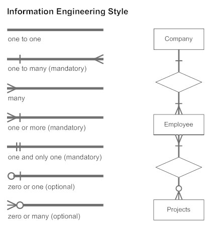
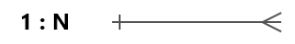
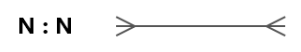
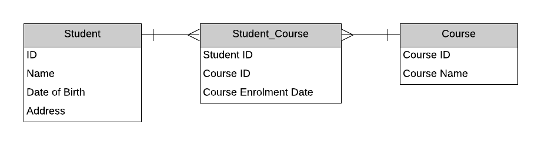
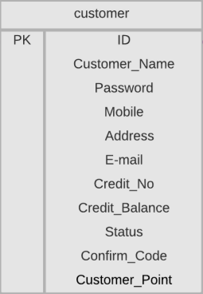
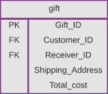
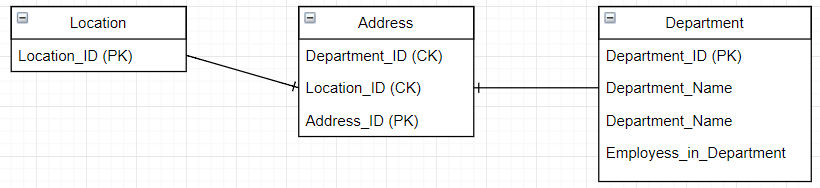

ERD Diagramm
Peatükid
Mis on ERD diagramm?
ERD (Entity Relationship Diagram) ehk olemi-suhte diagramm on andmebaaside modelleerimiseks kasutatav diagramm.
Mille eesmärk on kirjeldada süsteemis olevaid andmeid, nende omadusi ning omavahelisi seoseid enne andmebaasi
loomist.
ERD diagramm aitab arendajatel ja analüütikutel mõista, milliseid andmeid süsteemis hoitakse ja kuidas need andmed
omavahel seostuvad
Kus ERD diagramme kasutatakse?
ERD diagramme kasutatakse peamiselt:
- Andmebaaside projekteerimisel
- Infosüsteemide analüüsimisel
- Tarkvaraarenduses
- Ärirakenduste planeerimisel
- Süsteemide dokumenteerimisel
Näiteks:
- E-poodides
- Pankade infosüsteemides
- Koolide õppeinfosüsteemides
- Haiglate andmebaasides
Ühenduselemendid ja nende tähendused

ERD diagrammis kasutatakse ühendusi, mis näitavad, mitu objekti võib olla teise objektiga seotud.
Üks ühele (1:1)

Tähendus:
- Ühel inimesel on üks pass.
- Üks pass kuulub ühele inimesele.
üks mitmele (1 : N )

Tähendus:
- Üks õpetaja võib õpetada mitut kursust.
- Igal kursusel on üks õpetaja.
mitu mitmele (M : N)

(ERD's kasutatse M ja N ühikuid parlleelselt, mille põhiliseks põhjuseks on see et M ei pruugi olla sama ja võrdeline ühikuga N)
Tähendus:
- Üks õpilane võib osaleda mitmel kursusel.
- Ühel kursusel võib olla palju õpilasi.
Olemitabel
Olemitabel (Entity Table) kirjeldab ühte objekti andmebaasis.
| ÕpilaneID | Eesnimi | Perenimi | |
|---|---|---|---|
| 1 | Karl | Tamm | karl@email.ee |

Mis peab olemitabelis olema?
- Tabeli nimi
- Atribuudid (väljad)
- Primaarvõti (Primary Key ehk ID)
Mis võib olemitabelis olla?
- Foreign Key väljad
- UNIQUE piirangud
- NOT NULL piirangud
- Vaikimisi väärtused
- Arvutatavad väljad
Võtmed (Keys)
Mis on Key?
Key ehk võti on atribuut või atribuutide kogum, mida kasutatakse kirje tuvastamiseks või tabelite ühendamiseks. Võtmed aitavad tagada andmete korrektsuse ning luua seoseid tabelite vahel.
Primary Key (PK)
Primary Key ehk primaarvõti on väli, mis identifitseerib iga kirje unikaalselt.Omadused:
- Ei tohi korduda
- Ei tohi olla tühi (NULL)
- Igal tabelil on tavaliselt üks primaarvõti

Foreign Key (FK)
Foreign Key ehk välisvõti viitab teise tabeli primaarvõtmele.
Composite Key
Composite Key ehk liitvõti koosneb kahest või enamast väljast.Näide:

Viited ja allikad
https://www.softwareideas.net/erd-relation-arrows
https://stackoverflow.com/questions/3810064/primary-key-and-er-models